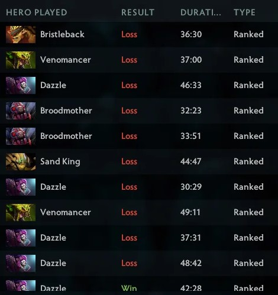

Home
Ruin-a-good-day!!!

Description
Have you ever felt like your day has just been going too perfectly
and you want to do something about it?
Or you were having such a terrible day that NOTHING could possibly make
it any worse?
We got you covered in any case!
Ingredients
- Approximately one hour of precious time (for one serving)
- One PC
- A chair: Can be a high end gaming chair or a plastic chair
with a broken back rest, won't matter at the end.
This recipe is
guaranteed to ruin your day matter how great it has been!!!
- Dota 2 installed:
You can do this easily via Steam
- Four unreliable randomly matched team mates: Don't sweat about this.
The state-of-the-art Dota 2 match making system is there to deliver the experience.
- Multiple cans of Red Bull(optional garnish): The more the BETTER!!!
Adding as many Red Bull cans as possible really
enhances the anxiety
flavour at the end of the day.
Instructions
- Sit down and boot up your PC.
- Go to Steam and start Dota 2.
- Queue for a ranked game. (!!!Remember to do this without any friends in your party!!!)
- Enjoy a lost game! It is that easy! It is that fast!
- What is it? You haven't had enough? Not to worry, easily repeat the instructions starting from Step 3.
- Enjoy yet another lost game!
Note:The greatest thing about this recipe is that you can repeat the steps as many time as you like and remember,
the more you repeat, the more intense flavours of Ruin-a-good-day!!! you can enjoy!
Other recipes